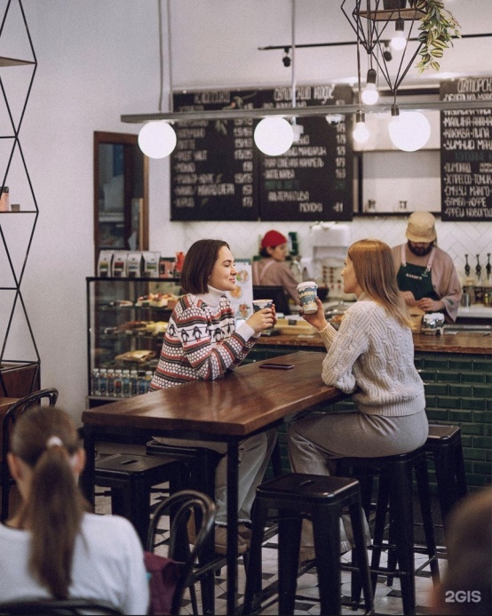

Звук выключен
Телефон не отвлекает от группы и ведущего.
Короткий маршрут для новичка: кто мы, как работаем, почему важна команда и что поможет уверенно войти в первые смены.

Начните спокойно: представьтесь, обозначьте длительность и цель. Важно сразу снять напряжение: это не экзамен, а знакомство с компанией и правилами.
Комфорт в разговоре, вкусе, атмосфере и деталях.
Гость возвращается, когда вкус и настроение не подводят.
Говорим и действуем понятно, без лишних усложнений.
Garden живой, человеческий и спокойный, а не показной.

Попросите участников привести по одному примеру: “Как эта ценность выглядит на смене?” Записывайте ответы словами команды.


Сделайте акцент: отличия должны быть заметны гостю в конкретных мелочах, а не только в презентации.

Можно провести быстрый круг: “Кто помогает тебе в первые дни?” Если группа новая, объясните роль управляющего, заместителя и наставника.

Назовите реальные ближайшие шаги после вводного тренинга: наставник, карта обучения, первая обратная связь, подготовка к аттестации.